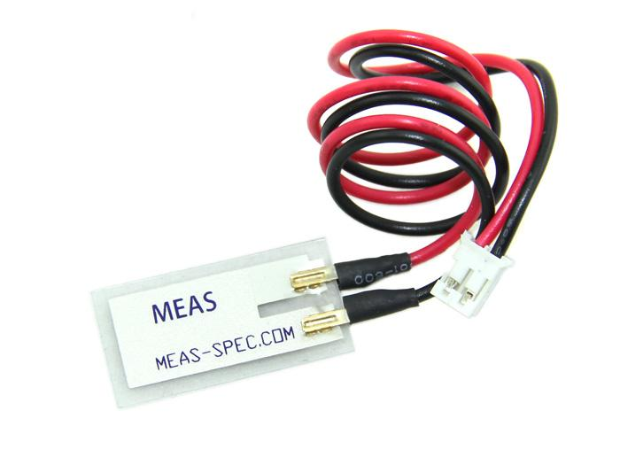
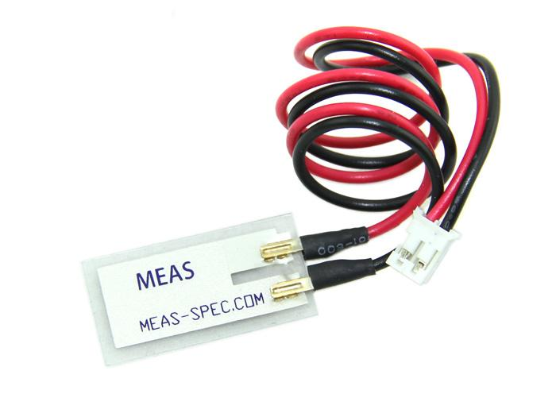
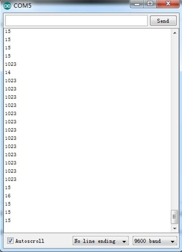

Grove- Piezo Vibration Sensor is suitable for measurements of flexibility, vibration, impact and touch. The module is based on PZT film sensor LDT0-028. When the sensor moves back and forth, a certain voltage will be created by the voltage comparator inside of it. A wide dynamic range (0.001Hz~1000MHz) guarantees an excellent measuring performance. And, you can adjust its sensitivity by adjusting the on-board potentiometer with a screw.
Model: SEN04031P
 

The Grove - Piezo Vibration Sensor outputs a logic HIHG when vibration was detected. We can use any of Arduino pins to read the data. Here is an example of Piezo Vibration Sensor controlling LED. When the vibration was detected, this sensor outputs a logic high signal ( the sensitivity can be changed by adjusting the potentiometer), an LED lights up.
Note: It may output low level even though originally output high level when you increase the threshold voltage by clockwise adjusting the potentiometer.
1. Connect the module to the Analog port 0 of base shield using the 4-pin grove cable and connect LED to Pin 12.
2. Plug the Grove - Basic Shield into Arduino.
3. Connect Arduino to PC by using a USB cable.
4. Copy and paste code below to a new Arduino sketch. Please click here if you do not know how to upload.
const int ledPin=12;
void setup() {
Serial.begin(9600);
pinMode(ledPin,OUTPUT);
}
void loop() {
int sensorValue = analogRead(A0);
Serial.println(sensorValue);
delay(1000);
if(sensorValue==1023)
{
digitalWrite(ledPin,HIGH);
}
else
{
digitalWrite(ledPin,LOW);
}
}
5. Touch the piezo sensor to make it vibrate, of course, any way to make it vibrate would be OK too. The LED would be on when vibration detected. You can also Open the serial monitor to see the sensor outputs

You can directly use a digital pin, take D5 of base shield as an example, and connect LED to Pin 12.
const int ledPin=12;
void setup() {
Serial.begin(9600);
pinMode(ledPin,OUTPUT);
}
void loop() {
int sensorState = digitalRead(5);
Serial.println(sensorState);
delay(1000);
if(sensorState == HIGH)
{
digitalWrite(ledPin,HIGH);
}
else
{
digitalWrite(ledPin,LOW);
}
}
1.You should have got a raspberry pi and a grovepi or grovepi+.
2.You should have completed configuring the development enviroment, otherwise follow here.
3.Connection
4.Navigate to the demos' directory:
cd yourpath/GrovePi/Software/Python/
nano grove_piezo_vibration_sensor.py # "Ctrl+x" to exit #
import time
import grovepi
# Connect the Grove Piezo Vibration Sensor to analog port A0
# OUT,NC,VCC,GND
piezo = 0
grovepi.pinMode(piezo,"INPUT")
while True:
try:
# When vibration is detected, the sensor outputs a logic high signal
print grovepi.analogRead(piezo)
time.sleep(.5)
except IOError:
print "Error"
5.Run the demo.
sudo python grove_piezo_vibration_sensor.py
Grove - Piezo Vibration Sensor Eagle File
Grove - Piezo Vibration Sensor PDF File
Piezo Vibration Sensor Datasheet
Copyright (c) 2008-2016 Seeed Development Limited (www.seeedstudio.com / www.seeed.cc)